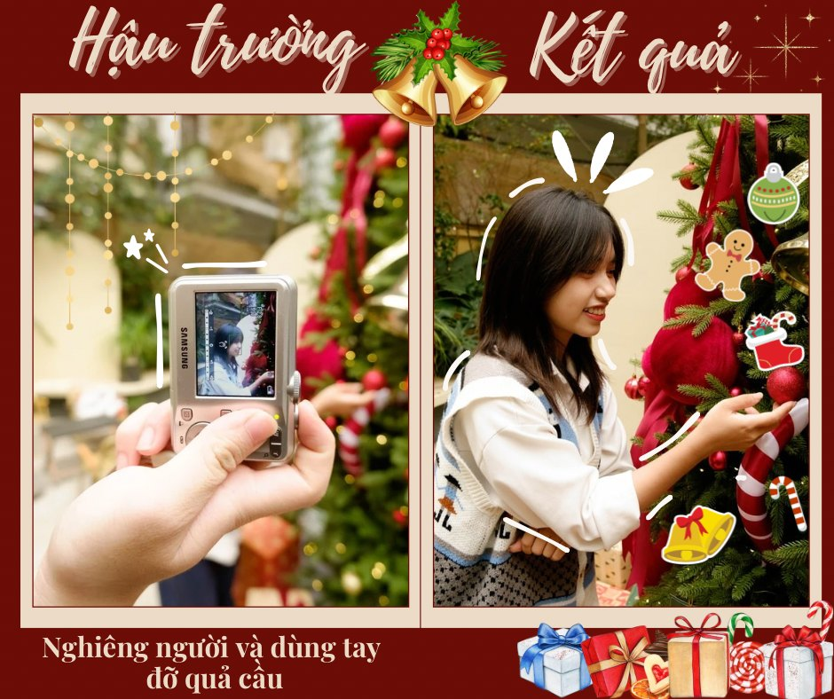

1. Nghiêng người và dùng tay đỡ quả cầu 
Nhẹ nhàng nghiêng người và nâng niu quả cầu trang trí là tối ưu cho phong cách dễ thương.
🌟Những ngày cuối năm, dường như mọi thứ đều khoác lên mình chiếc áo mới, rực rỡ và lộng lẫ̃y hơn. Đây là dịp để chúng ta nhìn lại chặng đường đã qua, điểm lại những dấu ấn mà ta đã có.
🎄Giáng sinh là dịp để ta trò chuyện cùng gia đình, cảm nhận khí lạnh trời đông, tham gia những bữa tiệc vui vẻ cùng bạn bè và là dịp để ta thỏa sức thả dáng, hóa thân thành “người tình mùa đông”.
😍Đi chụp ảnh Giáng sinh, muốn hoá thân thành người tình mùa đông mà dáng xấu thì có điên không cơ chứ? Nhưng đừng lo, hôm nay Sổ-er sẽ gợi ý cho các bạn những tips chụp ảnh ai ai cũng mê đét.
Nhẹ nhàng nghiêng người và nâng niu quả cầu trang trí là tối ưu cho phong cách dễ thương.
Dành cho những ai thích phong thái kín đáo nhưng vẫn quyến rũ, tay khé vuốt tóc hoặc giữ khăn len.
Nụ cười rạng rỡ điểm nhấn phù hợp khi chụp với đèn trang trí lung linh.
Tư thế khoanh tay mang đến sự tự tin, điểm thêm phần cuốn hút cho bức hình.
Ly cacao ấm áp tăng thêm sự ấm áp cho bức hình, nhìn xa xăm tạo cảm giác nhẹ nhàng.
Chú trọng background lung linh để hài hòa giữa người và không gian.
Giúp nhà tạo độ cao và tốt nhất để khoe trang phục và điểm nhấn phụ kiện.
🌟Với những tips này, chúc bạn có những bức hình lung linh nhân dị Giáng sinh! Chia sẻ với chúng tôi những khoảnh khắc đẹp nhé!